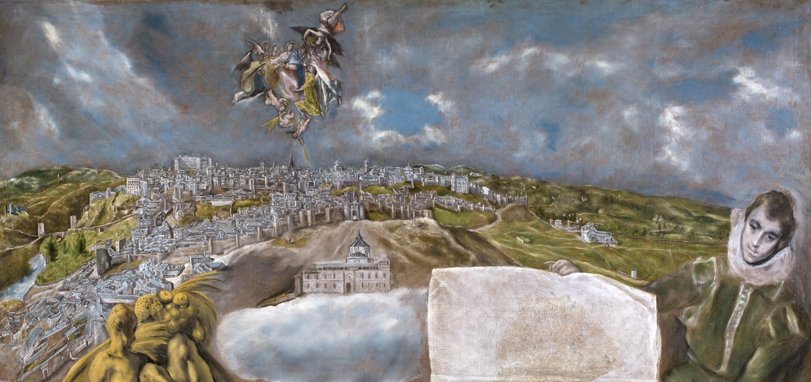

Toledo czyli El Greco
Bóg, stworzywszy czwartego dnia Słońce, rozjaśnił nim niebo nad Toledo.
Legendę tę zrozumiał Rilke ujrzawszy w roku 1912 to niezwykłe miasto nad Tagiem. Do jego opisu, jak donosił w liście do księżnej Marie von Thurn und Taxis, potrzebowałby „języka aniołów, co zagościli pośród ludzi”.
Tak gwieździsta aura spowija to niezwykłe miejsce (…) obydwa mosty, rzekę, a ponad nimi tę niezmierzoną obfitość krajobrazu, dającą się objąć spojrzeniem jak coś, co wciąż podlega kształtowaniu. I owo szczęście pierwszych dróg, jakie poddaje się próbie, niewymowne poczucie nieomylności kroku, jak gdyby za rękę prowadził jakiś niewidzialny przewodnik.
Szczęśliwcy odwiedzający dziś madryckie Prado mają niepowtarzalną sposobność obejrzenia zadziwiającego malowidła El Greca „Widok i plan Toledo”. Miasta, z którym artysta złączył się niczym „olbrzymi klejnot wtopiony w ten straszliwy i wspaniały relikwiarz”. Jego dzieła, w szczególności obraz „Wniebowzięcie Marii”, znajdujący się w kościele San Vincente, nabierają w tym otoczeniu szczególnej siły wyrazu.
W odróżnieniu od pozostałych dzieł artysty, przedstawiających widoki tego miasta, obraz ów ukazuje poniekąd podwójne jego oblicze. Oprócz perspektywicznego pejzażu Toledo prezentuje on również szczegółowy plan miasta, trzymany w dłoniach przez młodzieńca o charakterystycznych rysach El Grecowskich postaci z późnego okresu jego twórczości. Ta kompleksowa kompozycja zawiera również alegorię rzeki Tag, ukazaną na obrazie jako rzeźbę, z której wypływa woda uosabiająca dobrobyt, a także ikoniczny portret miasta — Dziewicę wkładającą ornat św. Ildefonsowi.
Malowidłu „Widok i plan Toledo” towarzyszą na wystawie trzy dodatkowe obrazy El Greca: „Św. Sebastian”, „Św. Andrzej i św. Franciszek” oraz „Św. Bernard” (ostatni obraz również ze zbiorów muzeum Prado). Wszystkie dzieła można obejrzeć na stronie internetowej wystawy.